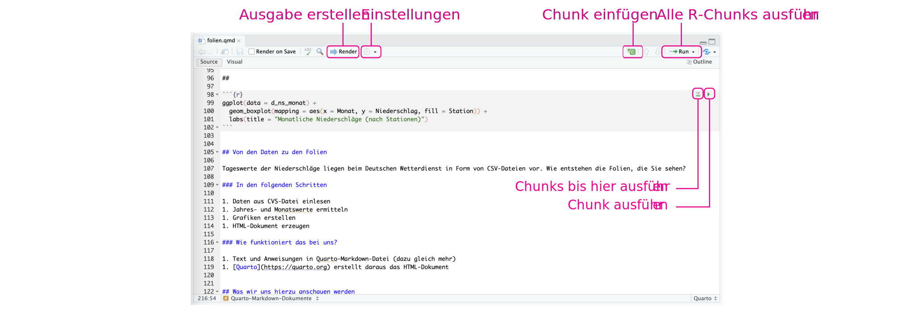

`summarise()` has grouped output by 'Station'. You can override using the
`.groups` argument.1 Erste Schritte in RStudio
1.1 Beispiele zum Einstieg: Niederschläge in ausgewählten deutschen Städten
1.1.1 Beispiel 1: Mittlerer jährlicher Niederschlag an verschiedenen Stationen in Deutschland
1.1.2 Beispiel 2: Monatlicher Niederschlag im Jahresverlauf (alle Stationen)
`summarise()` has grouped output by 'Station', 'Jahr'. You can override using
the `.groups` argument.1.1.3 Beispiel 3: Monatlicher Niederschlag im Jahresverlauf je Station
1.1.4 Von den Daten zu den Folien
Tageswerte der Niederschläge an den verschiedenen Stationen vom Deutschen Wetterdienst
Wie entstehen daraus die Folien?
- Daten aus CVS-Datei einlesen
- Jahres- und Monatswerte ermitteln
- Grafiken erstellen
- Daraus zusammen mit Text das HTML-Dokument erzeugen
Und wie funktioniert das?
- Wir schreiben Text und R-Anweisungen in Quarto-Markdown-Datei
- Quarto erstellt daraus das HTML-Dokument
1.1.5 Was wir uns hierzu anschauen werden
- Statistische Grundlagen
- Daten visualisieren mit ggplot2
- Daten einlesen und aufbereiten
- Basics der Programmiersprache R
- Arbeiten mit der Programmierumgebung RStudio
1.2 Was ist R und was ist RStudio?
1.2.1 R und RStudio
Programmiersprache R
- Programmiersprache für Statistik und Datenvisualisierung
- Frei verfügbar, erste Version 1993 veröffentlicht
- Keine Angst: Das wird keine Informatikvorlesung
Arbeitsumgebung RStudio
- Grafische Oberfläche zur Datenanalyse mit R
- Wir verwenden Quarto-Markdown für die Erstellung von Dokumenten
1.2.2 Die Oberfläche von RStudio

- Editor: Hier geben Sie ihren Text und Programmcode ein
- Umgebung (u.A.): Aktuell definierte Variablen
- Konsole (u.A.): Hier können Sie direkt R-Befehle eingeben
- Hilfe (u.A.): Hilfe zu Funktionen (nicht immer einfach zu verstehen)
1.3 Quarto-Markdown in RStudio
1.3.1 Reproduzierbare Statistik
Traditionelle Arbeitsweise (zum Beispiel mit Word)
- Statistische Untersuchungen mit speziellem Programm
- Ergebnisse und Grafiken von Hand in Dokument übernehmen
- Vorteile: Einfach, gewohnte Arbeitsweise
- Nachteile: Fehler in Berechnung - Zurück auf Start! Weg von den Daten zum Dokument nicht reproduzierbar
Arbeiten mit Quarto
- Quarto-Markdown-Dokument fasst Text und Berechnungen zusammen
- Daraus wird PDF/HTML/Word/PPT erzeugt (ähnlich wie mit LaTeX)
- Vorteile: Änderungen einfach, Methoden nachvollziehbar, reproduzierbar
- Nachteile: Ungewohnte Arbeitsweise, Lernkurve
1.3.2 Möglichkeiten mit Quarto
- Kurze Berichte erstellen
- Präsentationen (Sie schauen gerade eine an) vorbereiten
- Ganze Bücher schreiben
- Interaktive Webapplikationen entwickeln (mit Shiny)
- Hier eine Sammlung von Beispielen
- Video zur Einführung (englisch)
1.3.3 Ein einfaches Beispiel
links: Eingabe in Quarto Markdown
rechts: Ausgabe in html
1.3.4 Quarto konvertiert Quarto-Markdown

1.3.5 Quarto-Markdown-Dokumente

Ein Quarto-Markdown-Dokument
- ist eine reine Textdatei mit der Erweiterung .qmd
- beginnt mit ein paar Grundeinstellungen (oben nicht dargestellt)
- danach kommen
- Blöcke mit R-Code, die so genannten ‘Chunks’
- Text in spezieller Markdown-Schreibweise
1.3.6 Quarto-Markdown in RStudio

- RStudio fügt Elemente in Quarto-Markdown-Datei ein
- Berechnungsergebnisse und Grafiken (oben nicht dargestellt)